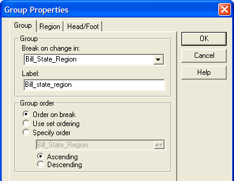
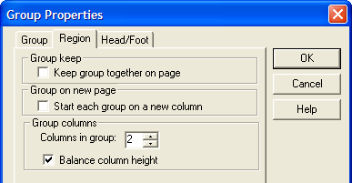
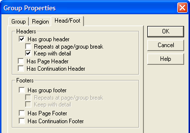

Report Group Properties
|
Item |
Description |
|
Break on change in |
The break expression that determines when to begin a new group. |
|
Label |
The label that identifies the group field on the report. |
|
Order on break |
Orders the groups of the report using the values of the break expression. |
|
Use set ordering |
Orders the groups of the report using the sort order of the table or set. |
|
Specify order |
Allow you to specify an expression that orders the groups of the report. |
|
Ascending Descending |
Specifies whether the groups will be sorted in ascending or descending order. |

|
Item |
Description |
|
Group keep |
Specifies that all detail records in a group must be kept together on a page. |
|
Group on new page |
Specifies that each group starts on a new column. |
|
Columns in group |
Overrides the report level setting for columns. |
|
Balance column height |
Indicates whether column heights should be balanced. Overrides the report level setting. |

|
Item |
Description |
|
Has group header |
Indicates whether the group has a group header. |
|
Repeats at page/group break |
Indicates whether the group header repeats at page and group breaks. |
|
Keep with detail |
Indicates that the group header must be followed by at least one detail record. |
|
Has Page Header |
Overrides the report level setting for Page Header for the current group. |
|
Has Continuation Header |
Overrides the report level setting for Page Continuation Header for the current group. |
|
Has group footer |
Indicates whether the group has a group footer. |
|
Repeats at page/group break |
Indicates whether the group footer repeats at page and group breaks. |
|
Keep with detail |
Indicates that the group footer must be preceded by at least one detail record. |
|
Has Page Footer |
Overrides the report level setting for Page Footer for the current group. |
|
Has Continuation Footer |
Overrides the report level setting for Page Continuation Footer for the current group. |

See Also
Report Properties, Report Detail Properties, Report Region Properties